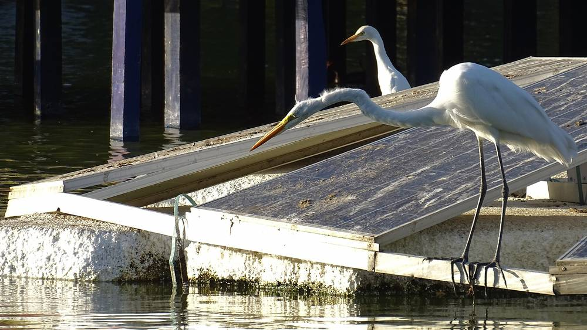

콜롬비아 정부 '에너지공동체' 태양광 사업, 패널 견적가가 시장가보다 높다는 문제 제기…대부분 공정 50% 못 미쳐 연말까지 연장 요청

2025년 말 공기업 3곳과 계약 17건·9,140억 페소, 2만8,544가구에 패널 6만221장…정부·전 차관 "가구당 비용으로 보면 과다 비용 없다"
콜롬비아 구스타보 페트로 정부가 태양광 패널과 배터리로 2만8,544가구에 하루 24시간 전기를 대겠다며 정부 재원으로 추진한 '에너지공동체' 사업에서, 계약 예산에 적힌 패널 견적가가 시장가보다 높다는 문제 제기가 나왔다. 광업에너지부는 2025년 말 공공 전력회사 Gensa·Electrocaquetá·Dispac과 계약 17건, 모두 9,140억 페소 규모로 2,274곳이 넘는 에너지공동체를 짓기로 했고 필요한 패널은 6만221장인데, 2026년 7월 31일까지 끝낼 계획이던 공사는 대부분 공정 50%에 못 미쳐 모든 계약이 물류 문제, 사전협의 절차, 수입 지연을 들어 12월 31일까지 연장을 요청했다. 공공조달 시스템(SECOP II)에 올라온 예산 문서를 보면 Electrocaquetá가 맡은 5개 주 8,631가구 사업에서는 같은 550W 패널 견적이 장당 50만5,469~78만2,383페소로 27만6,914페소까지 벌어졌고, 계약 예산상 패널값은 와트당 919~1,717페소로 2026년 9월 기준 업계 시세인 600~790W 패널 와트당 560~790페소를 웃돌아, 현지 언론 분석으로는 시장가와의 차이가 최소 100억 페소로 추정된다. 광업에너지부는 2025년 시장 조건으로 사업을 설계한 만큼 환율과 경제지표 변동을 따져야 한다며 "지금까지 그런 정황은 찾지 못했다"고 밝히고 계약을 상시 감독·검토하고 있다고 했으며, Dispac은 실제 시공에 600W·590W 패널을 감리 승인을 받아 쓰고 있다고 설명했고 Electrocaquetá와 Gensa는 답하지 않았다. 사업을 맡았던 빅토르 파테르니나(Víctor Paternina) 전 에너지 차관은 사업이 패널 단가가 아니라 운송·설치·교육·감리를 포함한 가구당 비용(평균 약 3,150만 페소)을 기준으로 설계됐고 패널값 차이는 최악의 경우에도 가구당 비용의 2~3%에 못 미쳐 과다 비용이 아니며, 사업비는 신탁에 묶여 설비 가동과 감리 확인 뒤에만 지급된다고 반박했다.
시민에너지 관점
2만8,544가구라는 큰 숫자를 짧은 기간에 채우려고 정부가 공기업을 통해 한꺼번에 발주한 이 사업에서는, 같은 패널 견적이 장당 27만 페소 넘게 벌어져도 정작 전기를 받을 주민은 그 내역을 따져 볼 자리가 없었다. 주민이 스스로 출자하고 결정하는 방식은 느리다는 반론이 나올 수 있지만, 위에서 서두른 이 사업도 대부분 공정 50%를 넘기지 못한 채 연장을 요청했고 정부와 전 차관이 과다 비용을 부인하는 지금도 단가 논란은 남아 있다. 독일의 에너지협동조합들이 조합원 총회에서 사업비와 수익을 공개하고 의결하는 것처럼, 돈을 내고 전기를 쓰는 주민이 사업의 주인이 되면 감시 장치가 사업 안에 들어간다. 국내 햇빛소득마을처럼 정부 예산이 들어가는 공모 사업도 설비 단가와 시공비를 품목별로 공개하고, 주민 조직이 계약과 검증의 주체가 되도록 설계해야 한다.
출처: El Espectador 2026-11-01 Andrés Mauricio Díaz Páez 원문 보기
コロンビア政府の「エネルギーコミュニティ」太陽光事業、パネルの見積価格が市場価格より高いとの問題提起…大半が進捗50%未満で年末までの延長を要請
2025年末に公営企業3社と契約17件・9,140億ペソ、2万8,544世帯にパネル6万221枚…政府・前次官「世帯当たり費用で見れば過大な費用はない」
コロンビアのグスタボ・ペトロ政権が太陽光パネルと蓄電池で2万8,544世帯に1日24時間電気を届けるとして政府資金で進めた「エネルギーコミュニティ」事業で、契約予算に記されたパネルの見積価格が市場価格より高いとの問題提起が出た。鉱業エネルギー省は2025年末、公営電力会社のGensa、Electrocaquetá、Dispacと計17件、総額9,140億ペソの契約を結び、2,274カ所を超えるエネルギーコミュニティを建設することにし、必要なパネルは6万221枚に上るが、2026年7月31日までに終える計画だった工事は大半が進捗50%に届かず、すべての契約が物流の問題、事前協議の手続き、輸入の遅れを理由に12月31日までの延長を求めた。公共調達システム（SECOP II）に掲載された予算文書によると、Electrocaquetáが担う5県8,631世帯の事業では同じ550Wパネルの見積もりが1枚50万5,469～78万2,383ペソと最大27万6,914ペソ開いており、契約予算上のパネル価格はワット当たり919～1,717ペソで、2026年9月時点の業界相場である600～790Wパネルのワット当たり560～790ペソを上回り、現地メディアの分析では市場価格との差は少なくとも100億ペソと推計される。鉱業エネルギー省は2025年の市場条件で事業を設計したため為替や経済指標の変動を考慮すべきだとして「これまでにそのような兆候は見つかっていない」と述べ、契約を常時監督・検証しているとした。Dispacは実際の施工で600W・590Wのパネルを監理の承認を得て使っていると説明し、ElectrocaquetáとGensaは回答しなかった。事業を担当したビクトル・パテルニナ（Víctor Paternina）前エネルギー次官は、事業はパネル単価ではなく輸送・設置・研修・監理を含む世帯当たり費用（平均約3,150万ペソ）を基準に設計されており、パネル価格の差は最悪の場合でも世帯当たり費用の2～3%に満たないため過大な費用ではなく、事業費は信託に置かれ、設備の稼働と監理の確認後にのみ支払われると反論した。
市民エネルギーの視点
2万8,544世帯という大きな数字を短期間で満たそうと、政府が公営企業を通じて一括発注したこの事業では、同じパネルの見積もりが1枚27万ペソ以上開いても、電気を受け取る住民にはその内訳を確かめる場がなかった。住民が自ら出資して決める方式は遅いという反論もありうるが、上から急いだこの事業も大半が進捗50%を超えられないまま延長を求め、政府と前次官が過大な費用を否定する今も単価をめぐる論争は残っている。ドイツのエネルギー協同組合が組合員総会で事業費と収益を公開して議決するように、お金を出して電気を使う住民が事業の主人になれば、監視の仕組みが事業の内側に組み込まれる。韓国の「陽光所得村」のように政府予算が入る公募事業も、設備単価と施工費を品目別に公開し、住民組織が契約と検証の主体となるよう設計すべきだ。
出典: El Espectador 2026-11-01 Andrés Mauricio Díaz Páez 原文を読む
哥伦比亚政府“能源社区”光伏项目被指光伏板报价高于市价…多数进度不足50%，申请延期至年底
2025年底与3家国有企业签订17份合同、金额9,140亿比索，为2万8,544户安装6万221块光伏板…政府和前副部长称“按每户成本看不存在超额费用”
哥伦比亚古斯塔沃·佩特罗政府以政府资金推动、要用光伏板和电池为2万8,544户提供全天24小时供电的“能源社区”项目，被指合同预算中的光伏板报价高于市场价格。矿业和能源部于2025年底与国有电力公司Gensa、Electrocaquetá和Dispac签订17份合同，总额9,140亿比索，建设2,274个以上能源社区，所需光伏板6万221块；原计划在2026年7月31日前完工的工程多数进度不足50%，所有合同都以物流问题、事先协商程序和进口延误为由，申请延期至12月31日。根据公共采购系统（SECOP II）上的预算文件，Electrocaquetá负责的5个省8,631户项目中，同一款550W光伏板报价为每块50万5,469至78万2,383比索，差距达27万6,914比索；合同预算中的光伏板价格为每瓦919至1,717比索，高于2026年9月行业行情中600至790W光伏板每瓦560至790比索的水平，据当地媒体分析估算，与市场价的差额至少100亿比索。矿业和能源部表示，项目是按2025年的市场条件设计的，应考虑汇率和经济指标的变动，并称“迄今未发现此类迹象”，合同处于持续监督和审查之中；Dispac解释说，实际施工使用的是经监理批准的600W和590W光伏板；Electrocaquetá和Gensa未作回应。曾负责该项目的前能源副部长维克多·帕特尔尼纳（Víctor Paternina）反驳说，项目不是按光伏板单价，而是按包括运输、安装、培训和监理在内的每户成本（平均约3,150万比索）设计的，光伏板价差即使在最坏情况下也不到每户成本的2%至3%，不构成超额费用，而且资金存放在信托中，只有在设施运行并经监理确认后才会支付。
市民能源视角
在这个政府为了在短时间内完成2万8,544户这一大数字、通过国有企业一次性发包的项目中，同一款光伏板报价每块相差27万比索以上，真正用电的居民却没有机会核查其中明细。有人会说由居民自己出资、自己决策的方式太慢，但这个自上而下赶工的项目同样多数进度未过50%就申请延期，而在政府和前副部长否认超额费用的当下，单价争议仍未平息。正如德国的能源合作社在社员大会上公开并表决项目费用和收益那样，出钱又用电的居民一旦成为项目的主人，监督机制就内置在项目之中。韩国“阳光收入村”这类投入政府预算的公开招募项目，也应按品目公开设备单价和施工费，并把居民组织设计为合同和核查的主体。
来源: El Espectador 2026-11-01 Andrés Mauricio Díaz Páez 查看原文
Colombian government's "energy communities" solar programme faces questions over panel quotes above market prices, with most projects under 50% complete and extensions to year-end requested
Seventeen contracts worth 914,000 million pesos signed with three state utilities in late 2025 for 60,221 panels serving 28,544 households; ministry and former vice-minister say "measured per household, there were no cost overruns"
Questions have been raised over panel prices in the "energy communities" programme that President Gustavo Petro's government funded to bring round-the-clock electricity to 28,544 households with solar panels and batteries, after quotes recorded in the contract budgets were found to exceed market prices. In late 2025 the Ministry of Mines and Energy signed 17 contracts worth a total of 914,000 million pesos with the state utilities Gensa, Electrocaquetá and Dispac to build more than 2,274 energy communities requiring 60,221 panels, but most of the works, due to be finished by 31 July 2026, are less than 50% complete, and all the contracts have requested extensions to 31 December, citing logistics, prior-consultation procedures and import delays. Budget documents posted on the public procurement system SECOP II show that in Electrocaquetá's projects for 8,631 households in five departments, quotes for the same 550W panel ranged from 505,469 to 782,383 pesos each, a gap of 276,914 pesos, while panel prices in the contract budgets work out at 919 to 1,717 pesos per watt, above the September 2026 trade price of 560 to 790 pesos per watt for 600W to 790W panels, and a local media analysis puts the difference from market prices at no less than 10,000 million pesos. The ministry said the projects were designed under 2025 market conditions, so changes in exchange rates and economic indicators must be taken into account, and stated that "to date it has not identified findings of this kind", adding that the contracts are under constant supervision and review; Dispac said it is actually installing 600W and 590W panels approved by the project supervisor, while Electrocaquetá and Gensa did not respond. Former energy vice-minister Víctor Paternina, who oversaw the programme, countered that it was designed around cost per household, about 31.5 million pesos on average including transport, installation, training and supervision, rather than panel unit prices, that the panel price gap amounts in the worst case to less than 2-3% of the per-household cost and so is not an overrun, and that funds are held in a trust and paid out only after systems are running and verified by the supervisor.
Citizen Energy View
In a programme where the government placed bulk orders through state companies to hit the big figure of 28,544 households in a short time, the residents who would receive the power had no forum to examine the breakdown even when quotes for the same panel differed by more than 270,000 pesos each. Some may argue that letting residents invest and decide for themselves is too slow, but this rushed top-down programme has also asked for extensions with most works under 50% complete, and the dispute over unit prices remains even as the government and former vice-minister deny any overrun. Just as German energy cooperatives disclose project costs and returns and vote on them at members' general meetings, scrutiny is built into a project when the residents who pay for and use the power become its owners. Korean programmes funded by the state budget, such as the Sunlight Income Village scheme, should likewise disclose equipment unit prices and construction costs item by item and be designed so that residents' organisations sign and verify the contracts.
Source: El Espectador 2026-11-01 Andrés Mauricio Díaz Páez Read the original